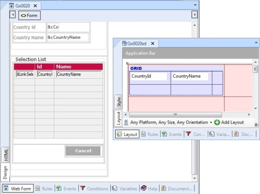

The panels -implementing Selection Lists- must necessarily include a grid in the form in order to display the entity’s most significant data, so that the user may identify the element searched for (as line in the grid) easily, so that when it is selected, its identifier is returned to the caller who invoked it.  To decide which fields of the corresponding table to present in the grid, we consider the table’s attributes in order, and to the extent that they don’t surpass the grid’s maximum width (128 characters for web and 68 for Win/SD) we can continue adding them. Also, to allow the easy selection of the element sought, filters are placed according to the attributes added to the grid –not more than six variables with their respective conditions (using operators >=, =, like, depending on the data type)–. The prompt will return the value selected by user, or null value in the case where user closes the prompt without selecting a value. In the example: parm(out:&pCountryId); ExceptionsLongVarchar attributes are not included, unless the table is empty if they are not included. Audio, Blob, Image, Video on Filter section are excluded.
|
| Backlinks |
| Selection Lists |